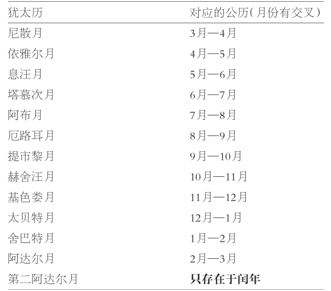
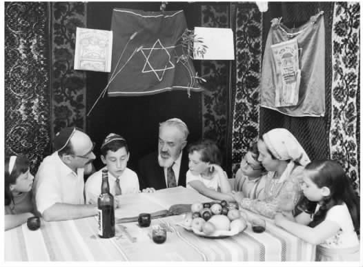
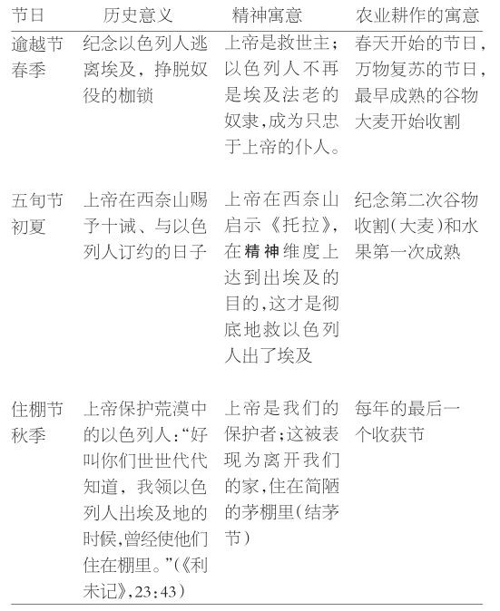
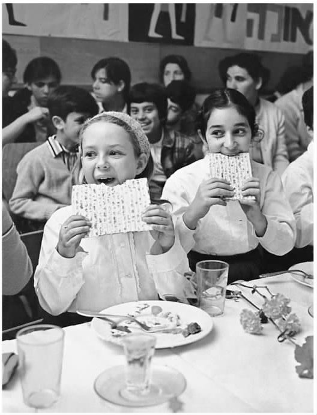
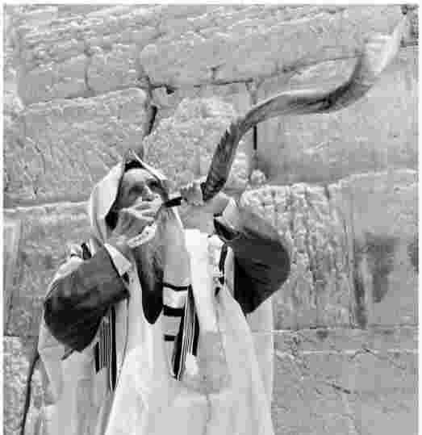
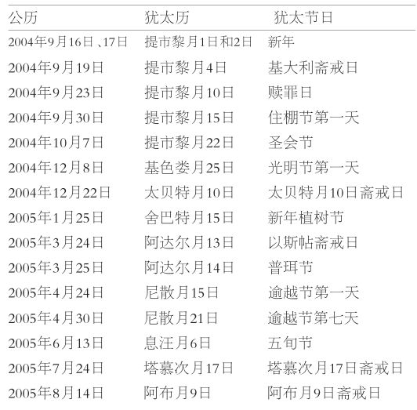
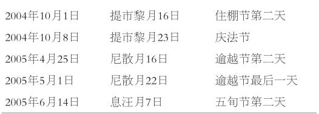

犹太历的关键是自然规律。
有一天，你睡醒过来，远离文明，没有历法，没有时钟，这时该如何标记时间的推移呢？随时间的流逝，你如何庆贺或者纪念生活中有重大意义的事件呢，比如生日、从沉船逃生的那一天、收获的日子？
你会注意到日出日落，会观察到太阳升到最高处刚好是一天的正中午时。然而，你无法确定午夜时分。所以，你的一天就起于日出或日落时分，或者就在那前后。事实上，两种方法都在犹太历法之中保留下来。祭祀过程开始于一天的黎明时分。如有其他的目的，一天则开始于黄昏。比如，这就是为什么安息日并非始于星期五或星期六的子夜，而是稍早于星期五日落之前——确切的时间则随着季节和纬度的不同而变化，并且公布在犹太人的出版物上。
这个简单的事实却引起重大的后果。如果安息日起于午夜，就很少有人注意得到。但是，安息日开始得早，安排在晚饭之前，于是，星期五晚上开始守安息就成了犹太人的一项重要社会习俗。人们到犹太会堂参加祈祷活动，唱优美的诗篇和圣诗，再回到灯火通明的家里，坐到节庆的餐桌边，对着一杯红酒，默诵祈福祷词，一起掰开面包；伴着感恩歌和赞美诗的吟唱，家人和访客都融入精神愉悦的氛围之中。甚至那些不去犹太会堂的人，或者不特别信奉宗教的人，也会在星期五晚上举行家庭聚会。如果说家庭观念和家庭与社区归属感还存在于犹太教之中，这主要是因为安息日开始点燃蜡烛时，家人感受到的那种祥和融洽的气氛。
一天始于日落时分，而不是始于子夜，就说这么多吧。月与年是怎么算的呢？
自然规律仍是关键。一个月（Month这个词派生于“月亮”moon）是月亮一盈一亏所用的时间，刚好二十九天半多一点。一年，就是四季循环一轮所用的时间（现在我们知道这取决于地球绕行太阳的轨道），不到三百六十五又四分之一天。利用自然规律来确定时间特别麻烦，因为根本没有办法用月的长度来整除年。穆斯林放弃了太阳年的算法，以十二个太阴月为一年，每个年度比其他地区大致少十一天；他们的节庆无法以自然为基础，因为这些节庆都跨季了。西方基督教徒的历法中，年度符合四季循环的时间，然而，月份不再涉及月相变化。犹太拉比所采用的历法能做到两全其美，然而，严格遵循自然规律也要付出一定的代价；月份要在二十九天和三十天之间变化，年度要在十二个月和十三个月之间变化，每十九年就有七个闰年（有十三个月的年份）。犹太历法虽复杂，却实用。这样，月朔得到庆贺，四季变换也得到纪念（见表4.1）。
《圣经》纪年中，月朔是一个相当重要的节日——书念的一位妇人在儿子病倒时匆忙去求先知以利沙，她丈夫大惑不解，因为那天“既不是月朔，也不是安息日”（《列王纪下》，4：23）——但在后来的犹太教中有点淡化了。尽管如此，中世纪的某些犹太教社区仍然禁绝妇女在月朔节工作。犹太女权主义者注意到这个中世纪的小事，便以此为由，重申罗什霍代什节（月朔节）为女性复兴的节日，在那天，妇女诵读祷告文，赞颂女性精神的方方面面。现在全世界有很多罗什霍代什节协会，其建会的目的就在于鼓励女性参加祷告，接受宗教训导。
表4.1 犹太人的月份

源自《圣经》的三个最流行的节日是“朝圣”——或者叫“远足”诸节，因为在古代，人们朝圣就是到耶路撒冷的圣殿中欢庆。伟大的犹太哲学家亚历山大的斐洛死于公元1世纪初，他曾生动描写了当时朝圣的情况：“无数的民众从无数的城镇赶来，他们翻山越岭，漂洋过海；每次庆典，人们都从四面八方汇聚而来。他们把圣殿当做避难所，远离尘世的忙碌与喧嚣，在那里寻求平和的气氛，不再理会早年间套在身上的重轭，面对和美宜人的场面，享受这简短的喘息时光。”

图5 英国犹太家庭，于住棚节在棚舍中用餐、研读《托拉》。
这三个朝圣节日有一个共同的主题，即在上帝面前欢喜：“在这节期以内，你们要欢乐”；把自己带到“耶和华选择的地方”（耶路撒冷），献上你带给上帝的“礼物”（《申命记》，16：14—16）。传统上，节日的欢乐表现为尽情吃喝，表现为给女人购买新衣服。快乐只有与对生活困苦者的关心结合起来，才算完美；同一节经文又说，“……陌生人、孤儿和寡妇同你们在一起”；因此，直到今天，节日期间人们都慷慨解囊，捐助贫困。
每个节日都有一种关乎历史的、关乎精神的、关乎耕作的意义；神秘主义者会深入钻研，挖掘其隐含的、内在层面的意义（见表4.2）。
总体上，犹太教会堂里的仪式比较温和，但也有例外。1663年10月14日，英格兰日记作家塞缪尔·佩皮斯心血来潮，第二次参观了位于伦敦克里教堂路的犹太会堂。所见所闻让他叹为观止。简直是群魔乱舞的场面，胡须花白的老人手持《托拉》卷轴，在会堂里欢呼跳跃，像小山羊一样。佩皮斯情不自禁，想探个究竟。当天是庆法节，是住棚节最后一天的大庆祝，《托拉》年度阅读周期结束了，又重新开始，犹太人结队围绕会堂中心的平台，欢快地舞蹈。
节日庆典对于家庭来说，和对于犹太会堂一样重要。无疑，最流行、最让人着迷的庆典是逾越节家宴。它的起源可以远溯到耶路撒冷圣殿宗教仪式中的逾越节献祭羔羊，羔羊在逾越节前一天的午后被杀掉，当晚，即逾越节的第一天晚上，在家中仪式性地食用羊肉。在神殿诵读完“哈列颂诗”（《诗篇》，113—118）之后，转而进行家宴。现在已经没有献祭的羔羊了，而吃无酵饼（未经发酵的面饼）和喝苦草饮料的习俗依然盛行。
晚间的安排则是围绕“哈加达”，即“讲述《塔木德》中的故事”展开的。“哈加达”也是一本书名，内容主要是宗教仪礼；很多犹太人引以为荣的就是收藏了各种版本的《哈加达》，有些版本印刷精美、配有插图，其中有许多包含了解释说明以及时新的评注。实际上，《圣经》中说，“在那日，你要告诉你的儿子说：‘这是因为耶和华在我从埃及出来的时候为我所行的事’”（《出埃及记》，13：8），逾越节家宴仪式要体现的就是这条圣诫。
表4.2朝圣诸节及其寓意

逾越节家宴是人人参与的大事。大家在一起读经、论经，唱圣诗。其中一个有趣的环节是，一开始由最小的孩子用希伯来语唱出“四个问题”。这个孩子很有可能已经练了好几周，激动地盼望着能和成年人一样睡得这么晚。极少有犹太人会忘记“为什么今天晚上与其他所有夜晚都不一样……”之类的话，这句话总能把人带回童年时代一家人其乐融融、团团围坐的美好回忆之中。

图6 耶路撒冷的一家幼儿园，孩子们正在学习如何庆祝逾越节，参加家宴（1971）。
自拉比犹太教时代，逾越节家宴上喝四杯红酒已成为习惯。这代表四个阶段的救赎，从出埃及算起（家宴前），到弥赛亚为止（家宴后）。有的还喝第五杯，或只是把这杯红酒倒在桌面上，“以祭先知以利亚”。
气氛融洽的逾越节家宴上的乐事之一就是大家一起论经，或者是讨论公开出版的各种评注，或者是讨论随便聊到的某句经文和很有创意的想法。近年的若干版《哈加达》，都想把书中的训诫应用于当代出现的问题：当代社会背景下，民族是什么样子，边缘化的群体是什么样子，应该通过什么途径来“解放”他们？
家里为逾越节作准备，气氛很紧张，节前一定除掉所有发酵的物品，依照《圣经》中的训导，这是最主要的事（《出埃及记》，12：15—20，13：7）；因而，这是一次彻底的春季大清扫时机。过节要用的是特殊的器皿和食物，不能有发酵物。犹太杂货店以及现今的普通超市都提供各种可供逾越节食用的食品；犹太人的烹调书籍通常选编有逾越节食谱，其中面粉的替代物就是无酵食物或者马铃薯粉。
并非所有犹太节日都充满欢乐。犹太新年与犹太赎罪日虽然不是悲惨的场合，但气氛很严肃，由新年开始到赎罪日结束，这十天是赎罪期。为期十天的赎罪期最终结束了敬畏日，即开始于犹太新年前一个月、为期四十天的悔罪过程。（有点像基督教大斋节，只不过不在春天，在秋季。）
在新年前夕的宴会（记住，始于前一天傍晚）上，人们吃那些象征甜美、福祉和丰足的食品。他们用面包蘸蜂蜜，而平时蘸盐；掰开面包之后，吃一片蘸有蜂蜜的苹果，再祷告：“唯您之愿，赐我们以丰年。”
早课很漫长，有四到六个小时，人们都会参加，即便有不少人会无意中迟到。祷告词以上帝为中心，上帝的形象是造物主，是王，是最高审判者，只有信靠祂、求祂慈悲的人，祂才赐予宽恕和怜悯。当天最有特色的是宗教仪式间歇时不断吹响羊角号。羊角号吹口参差，吹管也不规范，音准不容易把握，但是，吹到极处能很好地激起悔罪之意，体现先知的话：“城中如果吹起号角，居民怎会不惊慌呢！”（《阿摩司书》，3：6）
公元1世纪早期，斐洛提出，犹太教的赎罪日仪式“不仅由虔诚和圣洁的人，也由那些在日常生活中不按宗教方式行事的人奉行”。至今仍是如此。至少赎罪日当天（那天的祈祷持续一整天）的部分时间，犹太会堂里会人满为患。并不是所有进犹太会堂的人都渴求上帝宽恕他们的罪，或者都深刻反省和悔罪，从对上帝仁慈的深信不疑和对脆弱人性的同情中获得平和。实际上，这就是赎罪日的本来主题，也是虔诚的人所追求的。然而，对许多人来说，犹太赎罪日那天在犹太会堂露上一面，这是在申明自己的犹太人身份，而不是尽宗教义务。
然而，这是证明身份的一种不寻常的方式，特别是在与斋戒——事实上，这种行为往往只有极少的宗教意义——相结合时。因为赎罪日不仅跟安息日一样，不允许劳作，还有五种自我约束的形式：禁食、禁酒（这两项只算是一种），禁抹香膏，禁止同房，禁止洗浴（求舒适的洗浴）和禁穿皮鞋。
悔罪不仅是赎罪日的主题，还是犹太教的主要思想。它是“回到”（悔罪一词的直译）上帝身边，包括对罪的认知、悔过和忏悔，重新走上正途。完成这个过程，不需要献祭，也不需要中间人，只需信靠上帝的眷顾。《密西拿》（见第28页）中有正式的说法：
古老祷歌《科尔·尼德拉》得到充分重视，它开启了赎罪日前一天的犹太会堂仪式。其阿拉米语祷歌歌词虽是一种单一的惯用文句，乞求赦免漫不经心的誓辞，然而，那悠远动人的旋律与庄严的氛围相结合，构成了犹太历一年中最富情感的时刻。会堂内全体教众身穿最体面的衣服，满怀敬畏和期待，平静地聚在上帝的面前。
第二天，斋戒结束，最后的仪式是“奈依拉”（即“关闭天堂的大门”）；崇拜者此时被鼓励去充分利用天堂大门仍然开启的最后时光。众人齐唱：“我们的父，我们的王”，教众齐声高诵“与上帝同在”，羊角号最后吹响了。此时，仪式达到情感的高潮。
关于主要的节日就说这么多。还有许许多多的小节日，流传最广的是光明节、普珥节、新年植树节，以及以色列独立日。
光明节纪念的是约公元前165年哈斯蒙王朝重建圣殿。《塔木德》这样描述光明节的源起：

图7 绍法号通常由羊角或野山羊角制成；不能用牛角制作，因为这会让人联想到崇拜金牛犊之罪。
表4.3犹太历中的2004—2005

（注：犹太新年是在秋季，所以犹太年会横跨公历年。犹太历5765年是闰年，从公历2004年9月16日到2005年10月3日）
下面附加的节日只在流散各地的犹太人中庆祝：

这段“油的奇迹”其他资料没提到过。通过聚集于此，拉比把因战胜敌人而感恩的节日转变为对光明战胜黑暗的庆贺；《撒迦利亚书》中是这样说的：“不是倚靠权势，不是倚靠强力，而是倚靠我的灵。这是万军之耶和华说的。”（《撒迦利亚书》，4：6）
为期八天的节日，每天都点亮烛火，“宣扬神迹”。第一天晚上点燃一盏，第二天点两盏，以此类推，最后一晚点八盏。油灯已被蜡烛取代，现在，大多数人都有为光明节特制的八连灯大烛台，或枝状大烛台。很多枝状大烛台设计得很漂亮，由贵重金属制成。
《圣经·以斯帖记》中记载，普珥节庆祝的是犹太人从波斯王亚哈随鲁要灭绝他们的危险之中获救。希伯来人羊皮古卷本的《以斯帖记》，在毕恭毕敬地举行过宗教仪式之后，一早一晚要当众诵读。一个广为流传的习俗是，只要读到恶棍哈曼的名字，人们就会砰砰作响地敲东西，嘘声一片。比较苛刻的人反对这种做法，他们强调，每个词都应该让人听清楚。
这个节日有种狂欢的气氛，人们常常会打扮起来，组成狂欢游行队伍，甚至还会举行一场充满嘲讽意味的普珥节大辩论。遵从《以斯帖记》第9章第22节的教诲，救济物被分发给穷人，众人互赠礼物，大摆宴席，尽情欢乐。至于陶醉到何种程度才算值得称许，那就见仁见智了。
《塔木德》提到过新年植树节，只是在近代“复国”之后，该节才演变成流行的节日。特别是在以色列，新年植树节的标志就是学校放假，举行植树典礼活动。另外还有一个广泛流传的惯例，即按照当月的日期，吃十五个水果；以色列特产的水果最受欢迎。
依雅尔月5日（公历的4月底或5月）被定为犹太历上的以色列独立日；不管是政治方面，还是宗教方面，对此都有争议。不过，以色列境内外的许多犹太人既会组织社会活动，也会诵读特别的圣诗和祷告词，以庆贺这个日子。
除赎罪日之外，一年之中还有五个公众斋戒日；其中最重要的要属阿布月9日，用以纪念圣殿遭毁和其他惨剧。赎罪日和阿布月9日的斋戒要持续二十五个小时，从头天日落之前到第二天夜幕降临之后，不能吃喝任何东西；当然，那些禁食有困难或有危险的人会被特许进食。其他斋戒日只是在天明到日暮这一段时间禁食。